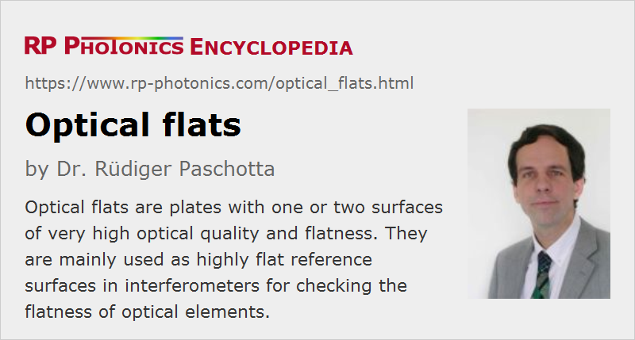

Optical Flats
Definition: plates with one or two surfaces of very high optical quality and flatness
German: optische Planplatten
Categories: general optics, optical metrology
How to cite the article; suggest additional literature
Author: Dr. Rüdiger Paschotta
Optical flats are plates with one or two surfaces of particularly high optical quality and flatness. The degree of flatness is quantified with the distance between two parallel imaginary planes, where one is tangential to the highest point of the surface and the other one to the lowest point. That flatness measure is normally at least λ/10, and sometimes even substantially better – e.g. down to a few nanometers. The surface roughness is also usually very low.
Application
Optical flats are mainly used as highly flat reference surfaces in interferometers for checking the flatness of optical elements such as optical windows, laser mirrors, prisms, optical filters or laser crystals. For example, one may place an optical flat close to an inspected surface, but slightly tilted against that surface, so that surfaces with ideal quality would result in a regular pattern of straight interference fringes when the assembly is illuminated with monochromatic light. Any deviations from that pattern then indicate deviations from perfect flatness.
Fabrication
Optical flats are fabricated in several steps, essentially in the same way as mirror substrates.
With further production steps, such as the application of a dielectric coating, they optical flats also be turned into high-quality optical elements themselves. For example, a Twyman–Green interferometer requires a very flat reference mirror, which can be made from an optical flat.
For checking the quality of optical flats, one may inspect them in interferometers, ideally using an even better reference surface. In some cases, one uses reference surfaces based on a liquid like mercury, which can be extremely flat but is difficult to handle.
Types of Optical Flats
Typically, an optical flat has a cylindrical shape, a diameter of a couple of centimeters, a thickness of a few millimeters, and is made of fused silica or some other clear optical glass. It thus looks like a mirror substrate. However, different types of optical flats are available:
- Some of them are very large, with diameters of tens of centimeters, suitable for testing very large surfaces.
- Different optical materials can be used. Fused silica is very common, since it is mechanically quite hard and chemically stable, and it exhibits a relatively small coefficient of thermal expansion (0.55 · 10−6 K−1). However, one can also use glass ceramics (e.g. Zerodur) with even several times lower thermal expansion coefficients, if that is of interest. For testing infrared optics, for example, various other materials can be used, for example germanium, silicon, zinc selenide (ZnSe) and sapphire.
Different degrees of surface quality can be obtained. A typical flatness specification would be λ/10, but even higher qualities are available. Usually, the surface quality should be substantially better than the specifications of the objects to be tested, so that obtained deviations from flatness are largely dominated by the quality of those objects.
Handling of Optical Flats
Even optical flares beta from a robust material such as fused silica should be handled with great care in order to avoid any surface damage. For example, one should always store optical flats in a suitable box, in which it is wrapped with a soft material.
During interferometric measurements, both the optical flat and the tested surface should be very clean; see the article on cleaning of optics.
Suppliers
The RP Photonics Buyer's Guide contains 43 suppliers for optical flats. Among them:
Questions and Comments from Users
Here you can submit questions and comments. As far as they get accepted by the author, they will appear above this paragraph together with the author’s answer. The author will decide on acceptance based on certain criteria. Essentially, the issue must be of sufficiently broad interest.
Please do not enter personal data here; we would otherwise delete it soon. (See also our privacy declaration.) If you wish to receive personal feedback or consultancy from the author, please contact him e.g. via e-mail.
By submitting the information, you give your consent to the potential publication of your inputs on our website according to our rules. (If you later retract your consent, we will delete those inputs.) As your inputs are first reviewed by the author, they may be published with some delay.
See also: interferometers, optical materials, mirrors
and other articles in the categories general optics, optical metrology
|  |
If you like this page, please share the link with your friends and colleagues, e.g. via social media:
These sharing buttons are implemented in a privacy-friendly way!